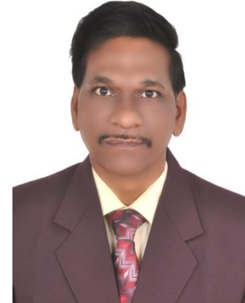
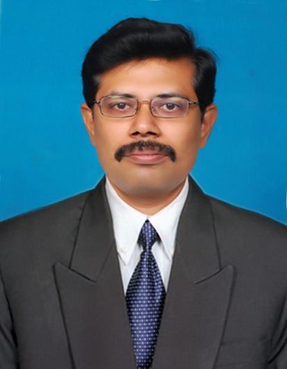

About Us

WeR4Help is a social service club functioning under CFSR at GVPCE(A) with the aim of supporting underprivileged families and spreading kindness in the society. The club was started in 2011 by three volunteers from the EEE branch with a simple intention to help people who silently struggle for their daily survival. Unlike many service activities that focus mainly on orphanages, WeR4Help follows a unique approach. Every year the club conducts surveys in underprivileged areas to identify families who hesitate to ask others for help. These families are then adopted by the club and provided with monthly groceries and medical support. The club is self-funded and conducts eco-friendly Ganesha idol sales during Vinayaka Chavithi. The funds collected help support adopted families and carry out all club initiatives. WeR4Help continues its journey guided by the motto: "Nobody can help everyone, but everyone can help someone."

Dr. A. B. Koteswara Rao
Principal and Director of CFSR- GVPCE

Dr. C. V. Nageswara Rao
Associate Director - CFSR

Ms. Lateefa Shaik
Faculty Coordinator